Tutorial 3 - Terminal and Command Line


- 3.1 Introduction to Command Line Interface
- 3.2 Command Prompt Basics
- 3.3 Terminal in Ubuntu (Linux) Basics
- References
3.1 Introduction to Command Line Interface
Command Line Interface (CLI) is a text-based interface that allows users to interact with a computer system by typing commands.
Through the CLI, users can run programs, navigate the file system, automate tasks, and perform many other operations.
Why use CLI?
- CLI is more efficient for certain tasks, since we can execute a task with a single command instead of multiple clicks in different windows.
- Although Windows offers features like Windows Task Scheduler, the CLI is often more flexible and easier for automating tasks.
- CLI provides access to advanced features not available in graphical interfaces.
- For some tasks, such as running tasks on a remote server, CLI is the only way to interact with a computer.
3.1.1 Basic CLI Definitions
Terminal: A terminal is the program (window) that offers access to the CLI. It is the interface where the command line is displayed, and the users type command inputs and see the outputs.
Shell: A shell is the command interpreter that executes the commands entered by users through the command line. It translates user commands into instructions comprehensible by the operating system for execution. The shell also manages tasks like input and output redirection, environment variables, scripting, and various other functionalities.
Different operating systems deploy distinct shell programs. For example, Windows uses the Command Prompt and PowerShell, while Unix-like systems typically utilize shells such as Bash (default on most Linux distributions), Zsh, Fish, or Dash.
In summary, the command line functions as a text-based instruction method, the terminal provides the visual interface for the command line, and the shell is the program responsible for interpreting and executing user commands through the command line.
3.1.2 Access the Command Prompt in Windows
The Command Prompt in Windows is the traditional command line. PowerShell in Windows is a modern shell with advanced scripting capabilities, which can run most commands from the traditional Command Prompt,but it can also run additional commands and it is object-oriented and not just text-based.
To access the Command Prompt in Windows, enter "command prompt" in the Start menu’s search bar to search for it. Alternatively, you can enter "cmd", which is the abbreviated name of the executable responsible for running the Command Prompt.
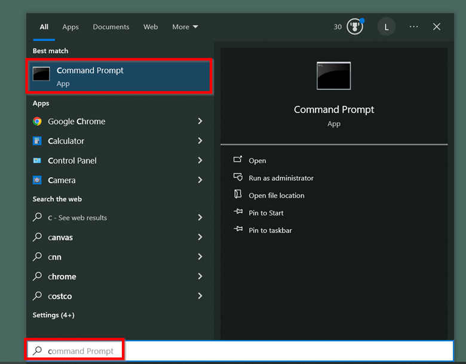
Also, you can press Win + R to open the Run box, then enter "cmd" and press Enter.
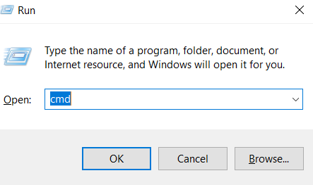
To run Command Prompt as an admin, right-click on the Command Prompt to select "Run as administrator", or you can also hold Ctrl + Shift before pressing Enter.
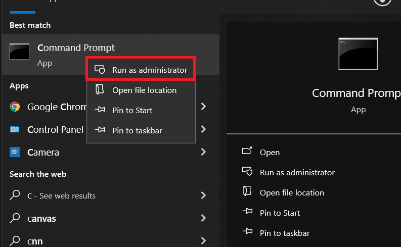
3.1.3 Other Ways to Access CLI in Windows
If you have installed Jupyter Lab, you can access the terminal through it. After opening Jupyter Lab, in the top menu select the File tab, then click New, and select Terminal.
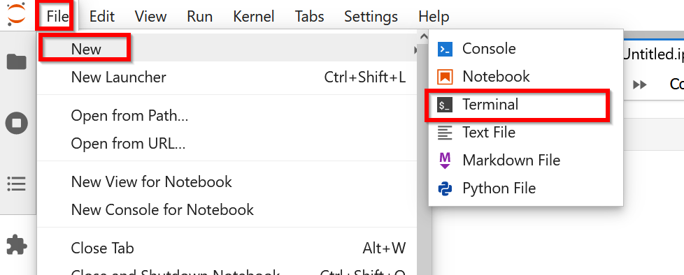
Alternatively, if you have installed Anaconda, you can use the Anaconda Prompt in the Start menu to access the terminal. The difference between Anaconda Prompt and Command Prompt is that Anaconda Prompt offers some conda-specific features, such as conda environment management, package management, and pre-configured data science packages.
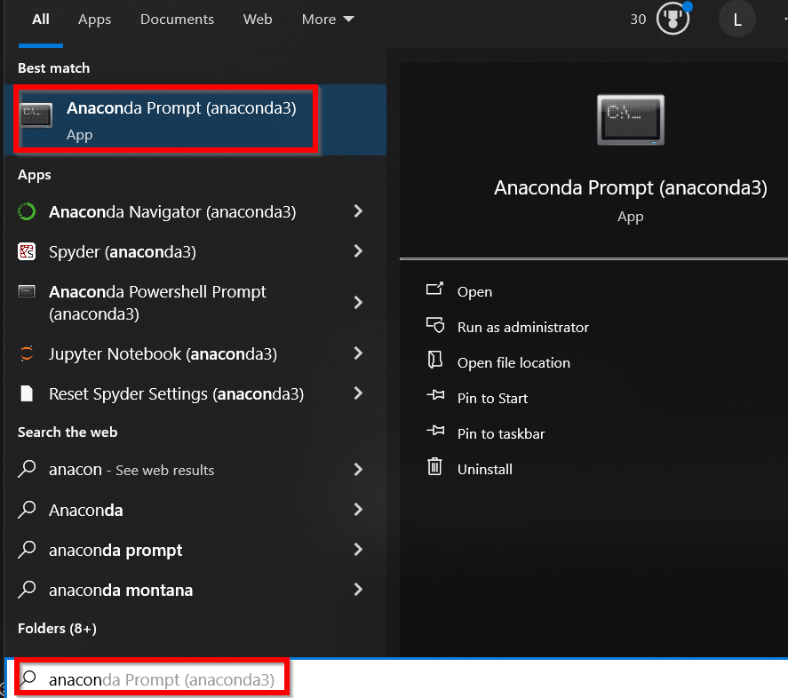
3.1.4 Access the PowerShell in Windows
To access PowerShell, press the Win and R keys, type powershell and press Enter.
Or, open the Command Prompt, type powershell and press Enter.
Note that the Command Prompt has black background, and the prompt shows C:\Users\Username>, whereas the PowerShell has blue background, and the prompt shows PS C:\Users\Username>.
PowerShell is backward-compatible with most commands from Command Prompt, so we can use either interface for this tutorial.
3.2 Command Prompt Basics
After opening a Command Prompt window, the current directory C:\Users\[Username]> will be displayed as in the figure below, followed by the > symbol.
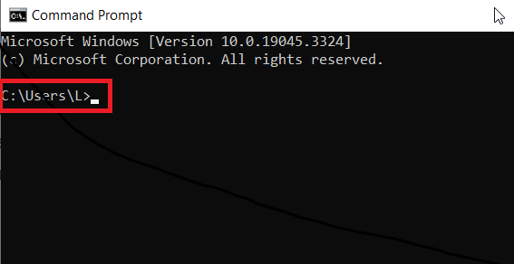
Only valid commands are accepted in the Command Prompt, otherwise a message like the one shown below will be displayed if an unknown or unrecognized command is entered.
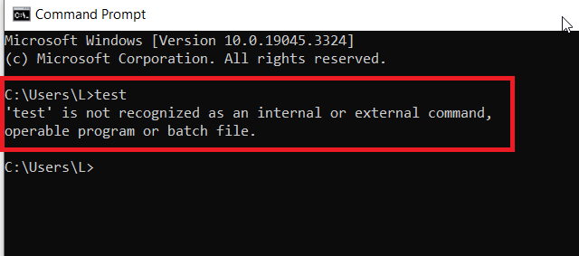
Help command: typing help in the Command Prompt will display a list of commands and the associated descriptions.
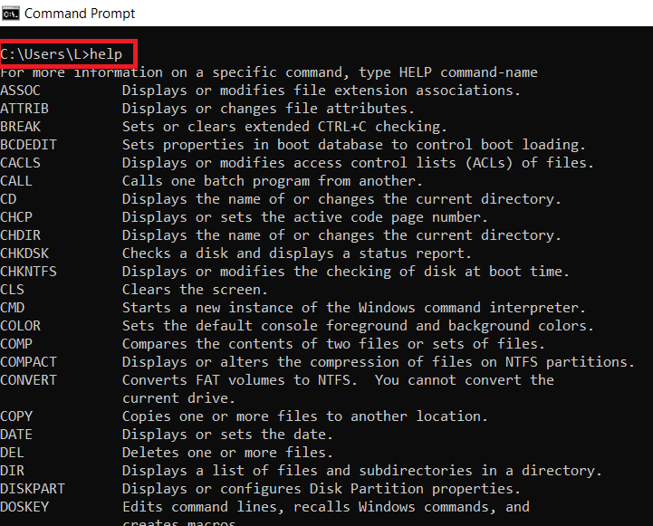
For more information on a specific command, type HELP command-name, e.g. HELP DIR. As you may have noticed, the commands in Windows Command Prompt are not case-sensitive, and both help dir and HELP DIR work for this case.
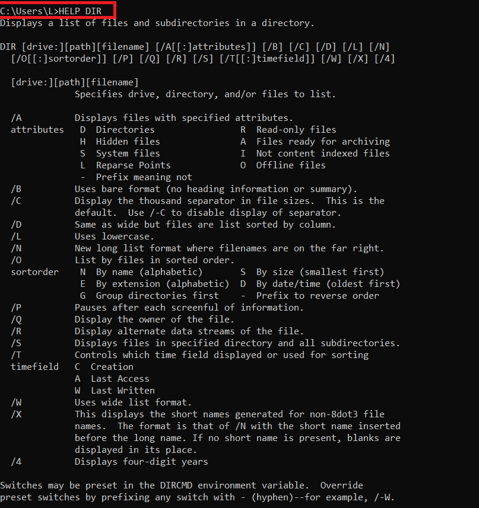
3.2.1 Listing and Changing Directories
The command DIR is an abbreviation for directory, and it lists the contents of the directory (folder) that you are currently in.
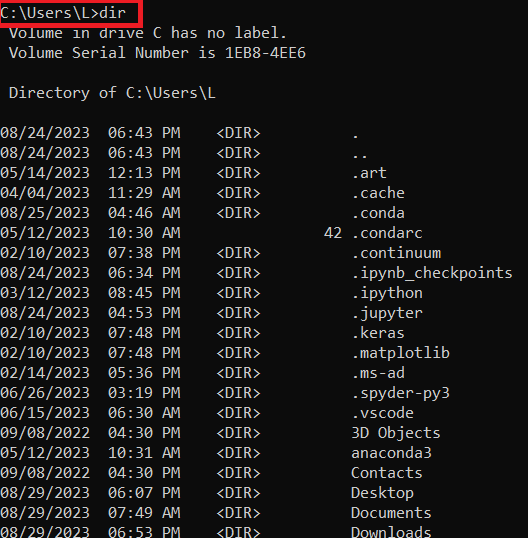
To change the current directory, use CD (change directory) followed by the name of the folder you want to access.
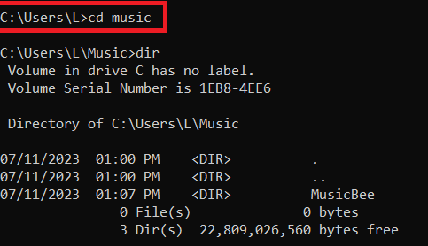
To go back to the parent directory of the current directory, use CD ...
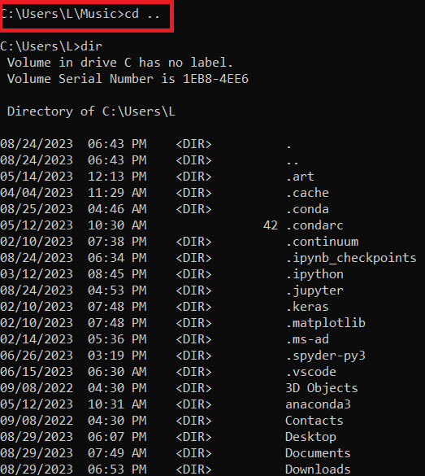
Also, in Windows cd %USERPROFILE% changes to the user’s home directory.
3.2.2 Creating and Deleting Files/Folders in Command Prompt
Use mkdir followed by [new-folder-name] to create a new directory/folder.
E.g., the command to create a folder named “test” is mkdir test.
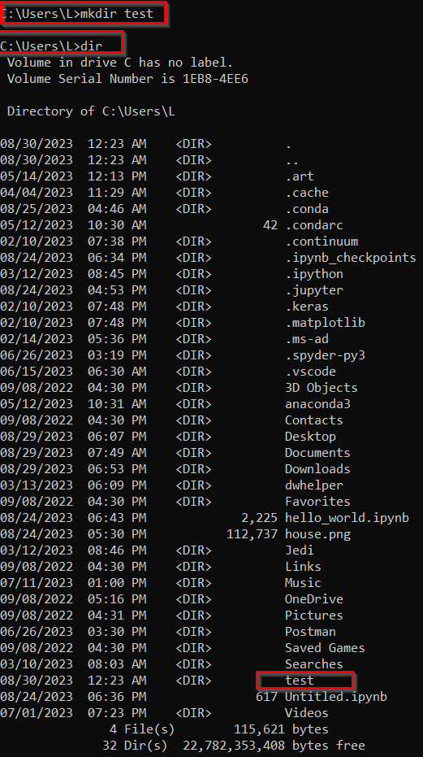
Use rmdir followed by [folder-name] to delete an existing directory/folder.
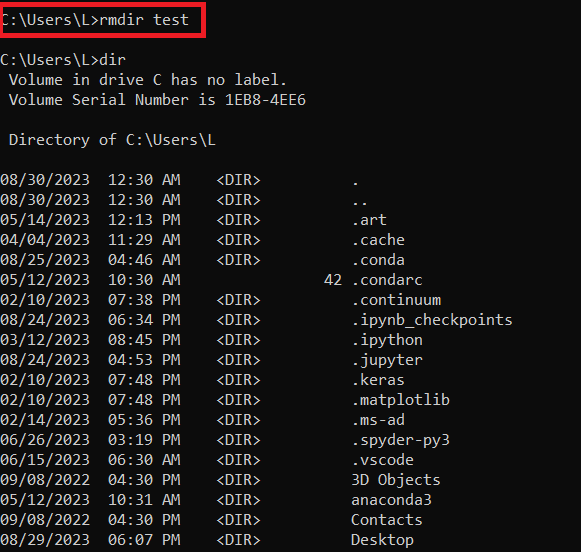
Use echo followed by content-of-the-file > [file-name] to write the content into a new or existing file.
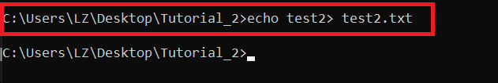
Beside writing to files, the echo command is also used to display messages, show variable names, and control whether commands are shown while a file is running.
Use del followed by [file-name] to delete a file.
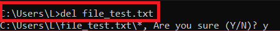
3.2.3 Copy and Move Files/Folders in Command Prompt
Use copy followed by [source] [destination] to make a copy of a file or folder from a source directory to a destination directory. E.g., in the figure below, copy the "test.txt" file to the test_folder.
Similarly, use move followed by [source] [destination] to move a file/folder between directories.
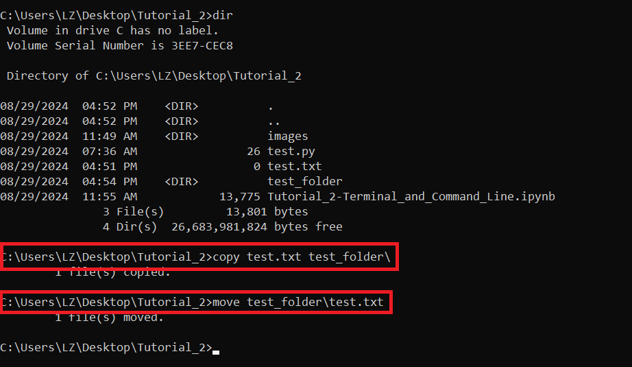
Miscellaneous Commands
Other important commands in Windows Command Prompt include:
type, display file contents (equivalent tocatin Linux).where, find location of executable files.tree, display directory structure in tree format.attrib, view/modify file attributes.findstr, search for text within files.tasklistandtaskkill, view and terminate processes.ipconfig, network configuration information.
3.2.4 Redirection, Pipes, and Chaining
Output redirection can be done with:
command > file.txt, redirect output to file (overwrite).command >> file.txt, redirect output to file (append).command 2> error.txt, redirect error output to file.
Pipes (the output of the first command becomes the input of the second command):
dir | findstr ".txt", e.g., list files in the current directory that are.txtfiles.tasklist | findstr "notepad", list currently running notepad processes.
Command chaining include:
command1 && command2, run command2 only if command1 succeeds.command1 || command2, run command2 only if command1 fails.command1 & command2, run both commands sequentially.
3.2.5 Autocomplete
When working with files and directories in Command Prompt, use the Tab key to autocomplete the names of files or directories.
The Command Prompt will complete the name based on the files and directories available in the current directory.
If there are multiple matches, pressing Tab repeatedly will cycle through all the possible completions.
3.2.6 CLI Management
Enter cls to clear the previous content of the Command Prompt and move the prompt back to the top of the window.
Press Ctrl + C to interrupt or terminate a command or process that is running.
Use the Up and Down keys to navigate to previous and next commands.
Wildcards and Pattern Matching
Wildcard characters include:
*, matches any number of characters.?, matches any single character.
Examples:
dir *.txt, list all.txtfiles.del temp*.log, delete all log files starting with'temp'.copy file?.txt backup\, copy files likefile1.txt,fileA.txttobackup\.
3.2.7 Run Python Files in Command Prompt
To execute a Python file, simply type python followed by the path to the file. Or, on some systems you might need to use python3 followed by the path to the file.
E.g., the path of the test.py file is C:\Users\L\Desktop\TA\test.py. To run this file, use the command python "C:\Users\L\Desktop\TA\test.py".
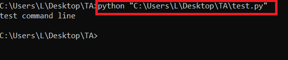
For Python package management use:
pip install package_name, install Python package.pip list, list installed packages.pip show package_name, show package information.pip freeze > requirements.txt, export package list.
If you have installed Anaconda, note that it also comes with its own package manager conda, which can manage both Python packages and non-Python dependencies (such as C libraries, compilers, system tools).
Examples:
conda install package_name, install Python package.conda list, list installed packages.conda remove package_name, remove a package.
3.3 Terminal in Ubuntu (Linux) Basics
To access the terminal, click on the Activities on the upper left of the screen, and type keywords like “shell”, or “terminal”, or “command”, “prompt”.
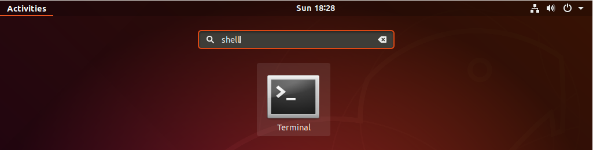
After opening a terminal window, username@linux-desktop:~$ will be displayed.
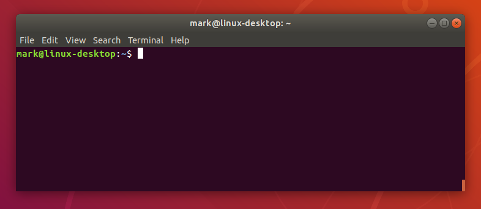
3.3.1 Basic Commands in Ubuntu (Linux)
Note that commands in Linux are case-sensitive, but commands in Windows are NOT case-sensitive.
The command help in Linux is the same command as in Windows, and it displays the available command names.
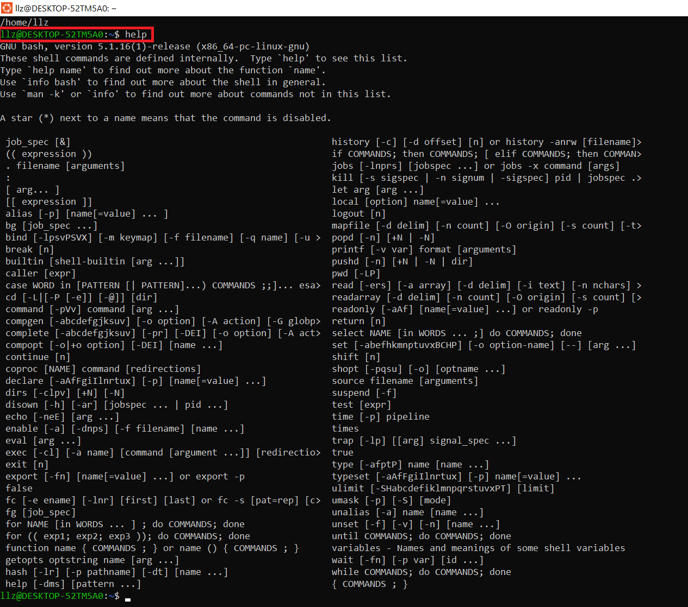
Similarly, help followed by command name will show the specific information of that command.
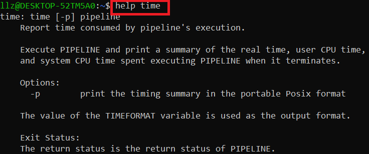
The command pwd stands for “print working directory” and it returns the current working directory, showing where you are in the file system.
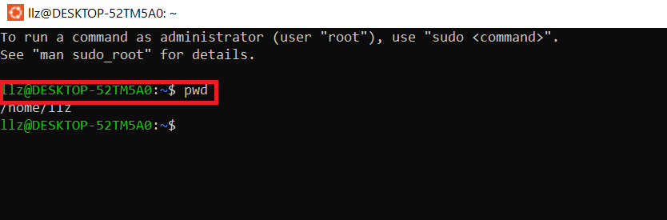
The cd command in Linux is the same as in Windows, and it is used to navigate between different directories in the file system. For example, cd / takes you to the root directory.
In Linux, ls is used to list the files in a directory, instead of the command dir in Windows.
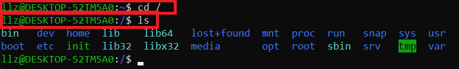
The mkdir command in Linux is used to create new directories within the file system, and it is the same as in Windows.
The touch command allows you to create an empty file in the current directory.
The rm command is used to delete a file in the current directory.
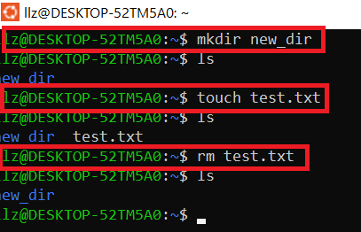
The cp command allows you to copy files or directories.
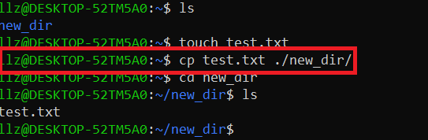
The mv command is used to move a file or directory from one place to another.
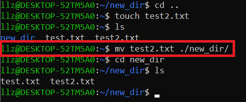
Pressing the keys Ctrl+C is used to interrupt or terminate a running command or process in the terminal.
The clear command is used to clear the terminal screen, removing all the previous output and providing a clean slate for new commands. This command doesn’t affect the running processes or the state of the system, and it simply clears the visual clutter from the terminal window.
By pressing Up and Down keys you can navigate through the previous commands you entered.
By hitting tab you will get autocompletion based on the text written so far.
To run a Python file in the Linux terminal, type python3 followed by the file name.
Other important commands in Linux terminal include:
cat, display file contents.grep, search text patterns in files.find, search for files and directories.chmod, change file permissions.ps, show running processes.kill, terminate processes.sudo, execute commands with elevated privileges.man, manual pages (more comprehensive than help).which, locate executable files.headandtail, display first/last lines of files.apt, system package management.
References
- “A Beginner’s Guide to the Windows Command Prompt” by Ben Stegner, available at: https://www.makeuseof.com/tag/a-beginners-guide-to-the-windows-command-line/.
- “Command Line for Beginners – How to Use the Terminal Like a Pro” by German Cocca, available at: https://www.freecodecamp.org/news/command-line-for-beginners/.